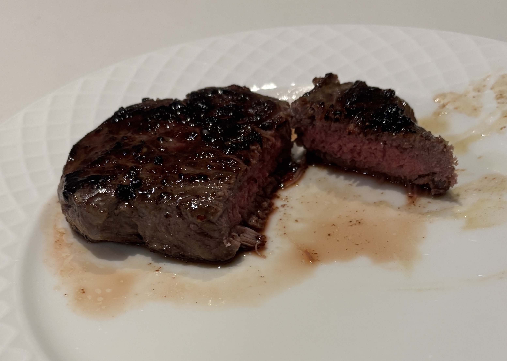

Home
Sirloin Steak

Ingredients
- Sirloin steak
- Canola oil
- Butter
- Garlic
- Thyme
- Rosemary
- Salt
- Pepper
Steps
- Pat the steak dry with a paper towel and season both sides with salt and pepper and drizzle conola oil over
- Preheat the pan medium-high temp then once its warm put the steak in searing both sides for 1 min
- Lower the heat so that the butter doesn't burn and add at least 2-3 tablespoons per steak
- Add the rosemary and thyme to the pan and while the butter melts pour it over the steak while it cooks
- Use a meat thermometer to check the internal temp and take it off the stove when the temperatuer is 5 to 10 less degrees than desirable
Internal temps
- Rare: 120-130
- Medium rare: 130-135
- Medium: 135-145
- Medium well: 145-155
- Well done: 155 and up